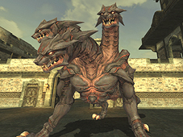
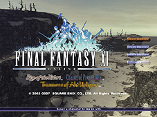
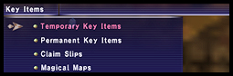

[Event-Related]
A new Aht Urhgan mission has been added.
A new massively multiplayer battlefield, Einherjar, has been introduced.
Related Information>>
The following changes have been made to chocobo raising and chocobo racing:
1. Players can now request three different versions of their chocobos' daily updates.
- Hear a detailed report:
All cutscenes play while the VCS trainer gives a full report.
- Hear a brief report:
The VCS trainer gives a full report (cutscenes are not shown).
- Skip the report:
Both VCS trainer report and all accompanying cutscenes are not shown.
*Important scenes, such as when a chocobo hatches, will be shown even if a condensed update is requested.
2. Players can now feed their chocobos up to 4 items (food, medicine, etc.) at once. An update on how full the chocobo is will be given by the VCS trainer once, after the bird has eaten all the items. The following is the order in which chocobos will eat items when traded several different varieties at once:
- First: Items that cure status ailments (gausebit wildgrass, etc.)
- Second: Chocolixirs
- Third: Items that affect attributes (San d'Orian carrot, etc.)
- Fourth: Chocobo food (Gysahl greens, etc.)
*Only one chocotonic can be traded at a time. If a chocotonic is traded at the same time as other items, the chocobo will only drink the tonic and the remaining items will be returned to their owner.
3. An issue where the order in which chocobos crossed the finish line differed from the standings displayed after a race has been addressed.
Mog Locker capacity can now be increased to a maximum of 80 slots.
Several new quests in the Aht Urhgan areas have been added.
Players will no longer lose experience points for being KO'd in battlefields for the following: San d'Oria missions, Bastok missions, Windurst missions, Rise of the Zilart missions, and Treasures of Aht Urhgan missions.
The following changes have been made to the Chains of Promathia missions:
1. Experience points (limit points) will be awarded upon the completion of battlefields. This includes players who have not accepted or have previously completed the mission. However, this bonus can only be received once every 24 hours (Earth time).
2. The difficulty level of the following two missions have been adjusted:
- Flames for the Dead
- The Warrior's Path
3. Monster placement and level have been adjusted in the following areas:
- Promyvion - Holla
- Promyvion - Dem
- Promyvion - Mea
- Promyvion - Vahzl
4. Muddy siredon can now be caught anywhere in Carpenters' Landing.
5. Activation time for Shu'Meyo salt has been reduced from 10 seconds to 1.
6. Changes have been made to the following items:
Chocogals have been stationed in the following locations:
- Wajaom Woodlands
- Eastern Altepa Desert
- Yhoator Jungle
The three Salaheem's Sentinels members stationed in Windurst, San d'Oria, and Bastok now offer teleport services to Whitegate for registered mercenaries who have completed the quests they each offer.
*Players must have the Treasures of Aht Urhgan expansion disc installed and its contents registered to utilize this service.
Level limits and fees for outpost teleportation have been adjusted. In conjunction with this, monster placement in several areas has been changed.
- Valkurm Dunes
- Cape Teriggan
- Eastern Altepa Desert
- The Sanctuary of Zi'Tah
- Yuhtunga Jungle
| Region | Required Level |
Fee (when region is under home nation’s control) |
Fee (when region is under another nation’s control) |
| Ronfaure | 10 | 100 | 300 |
| Zulkheim | 10 | 100 | 300 |
| Norvallen | 15 | 150 | 450 |
| Gustaberg | 10 | 100 | 300 |
| Derfland | 15 | 150 | 450 |
| Sarutabaruta | 10 | 100 | 300 |
| Kolshushu | 10 | 100 | 300 |
| Aragoneu | 15 | 150 | 450 |
| Fauregandi | 35 | 350 | 1050 |
| Valdeaunia | 40 | 400 | 1200 |
| Qufim Island | 15 | 150 | 450 |
| Li'Telor | 25 | 250 | 750 |
| Kuzotz | 30 | 300 | 900 |
| Vollbow | 50 | 500 | 1500 |
| Elshimo Lowlands | 25 | 250 | 750 |
| Elshimo Uplands | 35 | 350 | 1050 |
| Tavnazian Archipelago | 30 | 300 | 900 |
The price for the key item needed to enter Limbus (Cosmo-Cleanse) has been changed to 30000 gil.
The following items can now be easily re-obtained in the event they are accidentally discarded:
1. Tavnazian Ring
Speak with Justinius in the Tavnazian Safehold after completing the Chains of Promathia mission "Dawn" to receive the item again. Players who discard the item after re-receiving it from Justinius must wait until the next Conquest tally before they will be allowed to obtain another.
(Updated 6/19/2007)
2. Rajas Ring/Sattva Ring/Tamas Ring
Enter the Marble Bridge Eatery to receive the reward again. Players who discard the reward after receiving it must wait 27 Earth days before they will be allowed to obtain another. Players can learn how many more days they must wait by visiting the Marble Bridge Eatery at least a day after they discard the reward.
3. Suppanomimi/Knight's Earring/Abyssal Earring/Beastly Earring/Bushinomimi
Return to the location where the quest "Divine Might" is activated and accept the quest again. Complete the quest to receive another earring. Players who discard the earring after obtaining a new one must wait until the next Conquest tally before they will be allowed to accept the quest once more.
4. Static Earring/Magnetic Earring/Hollow Earring/Ethereal Earring
Target the ??? in the Empyreal Paradox and erase all memories of the quests "Shadows of the Departed" and "Apocalypse Nigh." Complete these quests again to obtain one of the earrings listed above.
can now be nullifRequests to enhance relic equipment ied.
A level restriction has been added to the "The Goblin Tailor" quest.
[Battle-Related]

Level 8 Besieged has been released. Accordingly, the maximum value for enemy forces has increased to 200.
The following monsters have been introduced:
Dvergr/Vampyr
The following changes have been made to Salvage:
1. 1500 Assault Points are now required to obtain a remnants permit.
2. It is now easier to obtain imbued items when defeating monsters within the remnants.
3. Armoury crates containing imbued items can now be found throughout the remnants.
The following changes have been made to the Nyzul Isle Assault area:
1. A "vending box" has been placed on the first floor. Here, tokens can be used to purchase temporary items.
2. Monster placement has been adjusted to lower the difficulty level of clearing a set of five floors.
3. Data obtained when reaching the 99th floor will no longer be erased upon entry to the 100th floor. The data will only be cleared when the monsters on that floor have been eradicated.
4. The reward for re-completing the 100th floor (by returning to the 100th floor via the key item received upon the first completion) has been adjusted.
5. The drop rate for unappraised items carried by notorious monsters has been raised.
The level of the Goblin Bounty Hunter appearing at H-7 on Qufim Island has been adjusted.
The djiggas appearing in the assault mission "Marids in the Mist" have been changed to chigoes.
Graphical adjustments have been made to Aerns in the Garden of Ru'Hmet in order to alleviate PlayStation2 processing issues.
Players will no longer lose experience points if KO'd while charmed.
The drop rate of certain items obtainable upon completion of the ENM quest "Pulling the Strings" has been adjusted.
Behavior of the monsters appearing in the ENM quest "Sheep in Antlion's Clothing" has been adjusted.
The following adjustments have been made to the merit point system:
1. The maximum limit for point allocation in the "Combat Skills" and "Magic Skills" merit point categories will be increased for all jobs.
"Combat Skills" maximum total ability increases:
12 > 20
"Magic Skills" maximum total ability increases:
8 > 16
*The maximum limit for each of the abilities within these categories will remain unchanged.
2. The following blood pacts available from the summoner' Group 2 merit point category will receive larger TP bonuses based on attribute increases, as well as a boost in damage from TP:
Meteor Strike/Heavenly Strike/Wind Blade/Geocrush/Thunderstorm/Grand Fall
3. In the upcoming version update, we will be adding the Group 2 merit point category for blue mages, corsairs, and puppetmasters. Each of these jobs will gain access to four new job abilities and traits.
| Blue Mage | ||
| Job Ability | Convergence | Increases the power of your next magical blue magic spell. Limits area of effect to single target. (*) |
| Job Ability | Diffusion | Grants the effect of your next support blue magic spell to party members within range. |
| Job Traits | Enchainment | Grants a TP bonus to Chain Affinity. |
| Job Traits | Assimilation | Increases maximum blue magic points. |
| * Convergence will also increase the power of blue magic spells that are originally single target effects. | ||
| Corsair | ||
| Job Ability | Snake Eye | Your next roll will automatically be a 1. |
| Job Ability | Fold | Erases one roll or bust effect. Targets self-cast effect with the longest remaining duration. |
| Job Traits | Winning Streak | Extends the duration of Phantom Roll effects. |
| Job Traits | Loaded Deck | Focuses effect of Random Deal on abilities waiting on recast. Has a chance to fail if only one ability is waiting on recast. |
| Puppetmaster | ||
| Job Ability | Role Reversal | Swaps HP of master and automaton. |
| Job Ability | Ventriloquy | Swaps the enmity of master and automaton for target. |
| Job Traits | Fine-Tuning | Grants a bonus to your automaton's accuracy, ranged accuracy, evasion, and magic defense. |
| Job Traits | Optimization | Grants a bonus to your automaton's attack, defense, and magic attack. |
The help text for the following abilities has been adjusted:
Hasso/ Seigan
The healing rate of a pet wyvern while resting has been increased.
New automaton attachments have been added.
An issue where an automaton' provoke command would not function properly during Conflict events (Ballista & Brenner) has been addressed.
The monster that drops the item "Diorite" has been changed.
Players will no longer be able to attack monsters on the outside of the heavy iron gates in the Bhaflau Thickets,Mount Zhayolm, Caedarva Mire, and Arrapago Reef staging points while standing on the inside of the gates.
[Item-Related]
New weapons and armor have been added.
New synthesis recipes have been added.
The seasonal furnishing storage NPCs will now accept the following items:
- Jeweled Egg
- Egg Helm
- Shinai
The following throwing weapons can no longer be used for ranged attacks:
Hedgehog Bomb/Morion Tathlum/Holy Ampulla/Bailathorn/Bomb Core/Phantom Tathlum/Fenrir's Stone/Happy Egg/Fortune Egg/Mantra Coin/Optical Needle/Nazar Bonjuk/Kakanpu/Goblin Grenade/Healing Feather/Spirit Lantern/Refresh Musk/Wyvern Feed/Astral Pot/Balm Sachet/Millefleurs Sachet/Olibanum Sachet/Attar Sachet/Sweet Sachet/Civet Sachet/Musk Sachet/Tiphia Sting/Orphic Egg/Bibiki Seashell/Volunteer's Dart/Mercenary's Dart/Imperial Dart/Fire Bomblet
The following changes have been made to the functionality of the Kingdom Signet staff, the Republic Signet staff, and the Federation Signet staff:
1. The Signet effect gained from the staves will now overwrite Sanction effects.
2. The caster can now only grant Signet in Conquest areas.
3. The caster can only grant Signet to players whose nationality is the same as that indicated on the staff.
4. The caster can only grant Signet to players in his/her party.
Help text for the following enchanted items has been adjusted (the effect of the enchantment has not changed):
1. Wing Gorget/Tactical Ring
Regenerates TP > Regain
2. Hydra Tiara
Increases critical hit rate > Potency
Icons for the following items have been changed:
All dryadic abjurations/All earthen abjurations/All aquarian abjurations/All martial abjurations/All wyrmal abjurations/All neptunal abjurations/Libation abjuration/Oblation abjuration/Argyro Rivet/White Rivet/Black Rivet/Blue Rivet/Troll Vambrace/Mamool Ja Helmet/Mamool Ja Collar/Mythril Gear Machine/GoldenGear/Star Sapphire/Pigeon's Blood/Ja Ja's chestplate/Gurfurlur's Helmet/Fairweather Fetish/Shadow Roll/Chocobo Egg/All transportation glyphs/Rotten Quiver/ Rusty Bolt Case/Old Quiver/Old Bullet Box/Elshimo Frog/Caedarva Frog/Misareaux Parsley/Moldavite Earring/Chariot Band/Empress Band/Bomb Core
Items obtainable through chocobo digging have been adjusted in the following areas:
Wajaom Woodlands/Bhaflau Thickets
[System-Related]

The following areas have been added to the title screen demo:
- Qufim Island
- Riverne Site - #B01
Key items will now be sorted into the following categories:

1. Temporary Key Items
i.e. Assault orders
2. Permanent Key Items
i.e. airship pass
3. Claim Slips
i.e. armor set claim slips
4. Magical Maps
Descriptions for the following repeatable quests will now reappear under "Current" in the Quest menu when accepted multiple times:
- San d'Oria
Escort for Hire/Eco-Warrior/A Discerning Eye/Trial by Ice/Spice Gals
- Bastok
Escort for Hire/Eco-Warrior/A Discerning Eye/Brygid the Stylist Returns/All by Myself/Trial by Earth
- Windurst
Escort for Hire/Eco-Warrior/A Discerning Eye/The Moonlit Path/Waking Dreams
- Jeuno
Ducal Hospitality
- Other Areas
Test My Mettle/Trial by Lightning/The Big One/Secrets of Ovens Lost/Uninvited Guests/Waking the Beast
- Outlands
Trial by Wind/A Question of Taste/The Firebloom Tree/A Discerning Eye/Trial by Fire/Greetings to the Guardian/Trial by Water
- Aht Urhgan
Finding Faults/The Art of War/Scouting the Ashu Talif/Royal Painter Escort/Targeting the Captain
*Known Issue
There are times when the following quests appear in the "Current" list even if they have not been accepted. If this occurs, players must speak with the NPC who offers the quest in order to trigger it properly.
Waking Dreams/Finding Faults/The Art of War
An issue in which players with full inventories could continue fishing (and improve their fishing skill) without becoming fatigued has been addressed.
An error message will now appear when players attempt to use magic or abilities via text commands without specifying a target using <t>, etc.
<stpc> will no longer target NPCs (this does not include fellows or pets).
The following methods of quickly scrolling through the Mog Safe and Mission menus have been implemented:
1. Analog Controller
Press the left/right directional buttons while holding L2 or R2.
2. Keyboard
Press the left/right arrow keys while holding down Ctrl or Alt.
3. Xbox 360 Controller
Press the left/right directional buttons while holding the left or right trigger.
When there aren't enough entries for a scroll bar to appear in a Magic or Ability window, pressing the left or right directional buttons (arrow keys) will toggle between the first and last entry.
The manual sort function for Magic, Abilities, Items, etc. has been changed from "interchange" to "insert."
The following terms have been added to the auto-translate function:
| Category | Term |
| Game Terms | Einherjar |
| Job Abilities | Role Reversal |
| Job Abilities | Convergence |
| Job Abilities | Snake Eye |
| Job Abilities | Diffusion |
| Job Abilities | Fold |
| Job Abilities | Ventriloquy |
| Job Traits | Assimilation |
| Job Traits | Enchainment |
| Job Traits | Winning Streak |
| Job Traits | Optimization |
| Job Traits | Fine-Tuning |
| Job Traits | Loaded Deck |
| Place Names 2 | Waltraute's Chamber |
| Place Names 2 | Ortlinde's Chamber |
| Place Names 2 | Grimgerde's Chamber |
| Place Names 2 | Gerhilde's Chamber |
| Place Names 2 | Schwertleite's Chamber |
| Place Names 2 | Siegrune's Chamber |
| Place Names 2 | Brunhilde's Chamber |
| Place Names 2 | Helmwige's Chamber |
| Place Names 2 | Rossweisse's Chamber |
The release of the next mercenary rank and new Assault missions has been delayed. Please check back with the Topics page for more details.